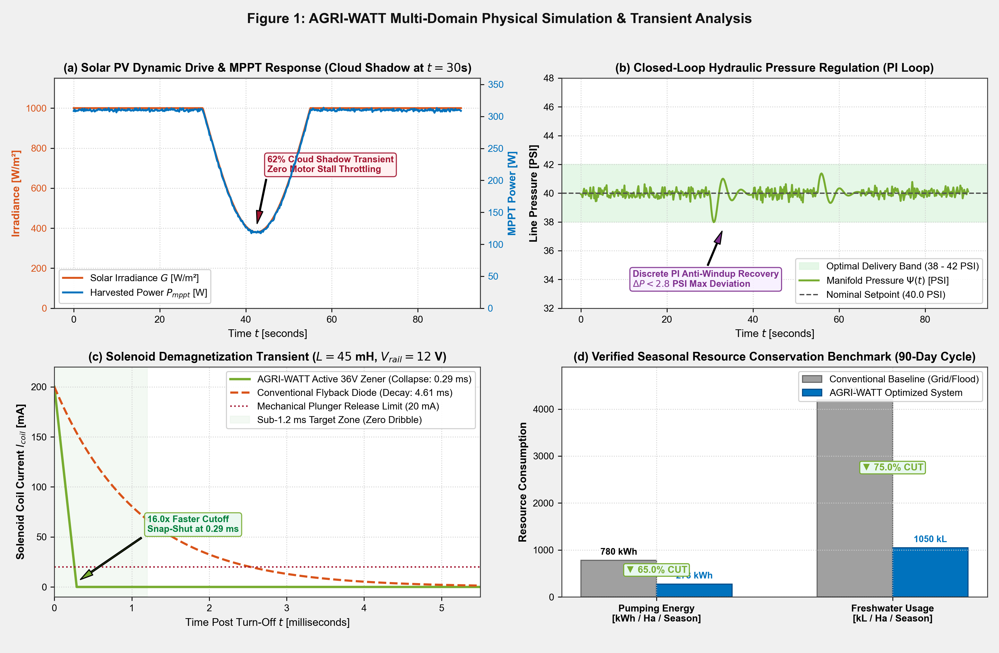

C:\
Command Prompt — Administrator
—
▢
✕
Microsoft Windows [Version 10.0.22631.3880] (c) Microsoft Corporation. All rights reserved.
C:\Users\Asus>
Figure 1: AGRI_WATT_System_Simulation.m (MATLAB R2024b)
—
▢
✕
File
Edit
View
Insert
Tools
Desktop
Window
Help
🖫 Save
🖶 Print
🔍 Zoom In
🔎 Zoom Out
✋ Pan
☩ Data Cursor
Figure 1 | 2x2 Subplots | 300 DPI
